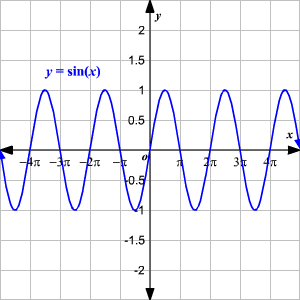
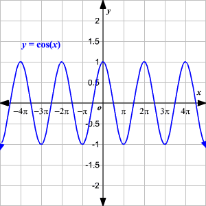
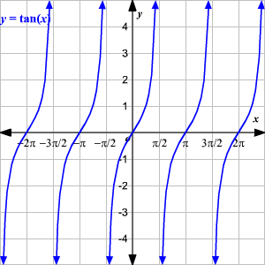
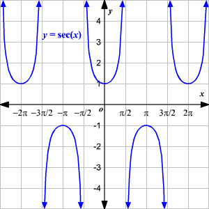
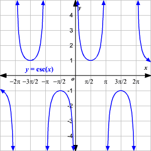
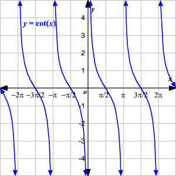

Funciones Trigonometrica
Las relaciones trigonométricas también pueden ser consideradas como funciones de una variable que es la medida de un ángulo.
Esta medida de ángulo puede ser dada en grados o radianes
Aquí, usaremos radianes. Ya que cualquier ángulo con una medida mayor que 2 π
radianes o menor que 0 es equivalente a algún ángulo con medida 0 ≤ θ < 2 π , todas las funciones trigonométricas son periódicas .
La gráfica de la función seno se ve así:

Dese cuenta que el dominio de la función y = sin x es todos los números reales (el seno está definido para cualquier medida de ángulo), el rango es −1 ≤ y ≤ 1.
La grafica de la funcion Cosenose ve asi:

El dominio de la función y = cos x es todos los números reales (el coseno está definido para cualquier medida de ángulo), el rango es −1 ≤ y ≤ 1.
La grafica de la funcion tangente se ve asi:

El dominio de la función es otra vez todos los números reales excepto los valores donde el cos x es igual a 0, esto es, los valores para todos los enteros n . El rango de la función es y ≤ −1 o y ≥ 1.
La gráfica de la función secante se ve así:

El dominio de la función es otra vez todos los números reales excepto los valores donde el cos x es igual a 0, esto es, los valores para todos los enteros n . El rango de la función es y ≤ −1 o y ≥ 1.
La gráfica de la función cosecante se ve así:

El dominio de la función es todos los números reales excepto los valores donde el sin x es igual a 0, esto es, los valores πn para todos los enteros n . El rango de la función es y ≤ −1 o y ≥ 1.
La gráfica de la función cotangente se ve así:

El dominio de la función es todos los números reales excepto los valores donde el sin x es igual a 0, esto es, los valores πn para todos los enteros n . El rango de la función es todos los números